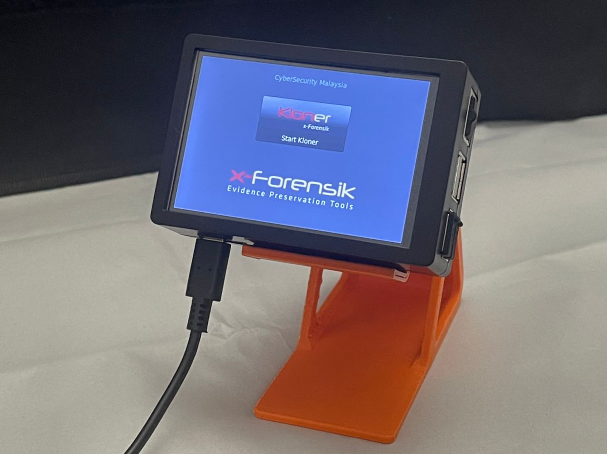

About Us
BY US
Cyber Crime Scene Investigation (CyberCSI) is a service provided to the Law Enforcement Agencies (LEA). This service focuses on investigation and prosecution for criminal case.

CyberDiscovery is a service offered to individual and private organization. It addresses concern on Electronic Stored Information (ESI) in order to provide solution to civil litigation.
Cyber Detect, Eradicate and Forensics (CyberDEF) provides a pro-active cyber defense forensics service to mitigate operational issues in cyberspace. This service is offered to Critical National Information Infrastructure (CNII) organizations sectors such as the government, banking and finance, information and communication and health services.
Expert Development & Consultancy focuses on research and development of cyber forensics. Under this service, we welcome any partnerships with local and international parties to accelerate the development of cyber forensics. We also provide consultancy service to support client’s business needs.

x-Forensik is a series of digital forensics tools developed by CyberSecurity Malaysia and has been launched in 2016.